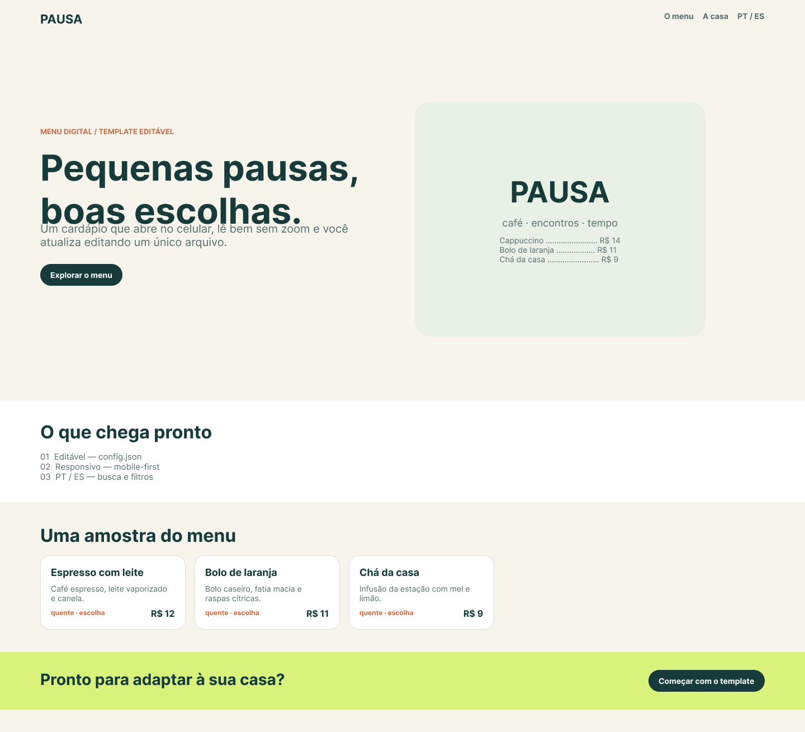
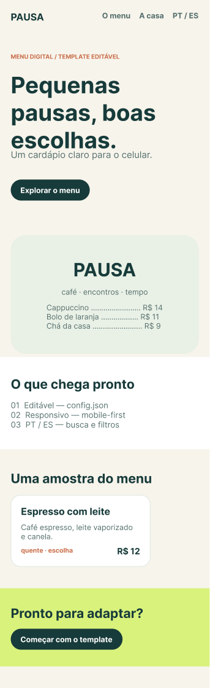
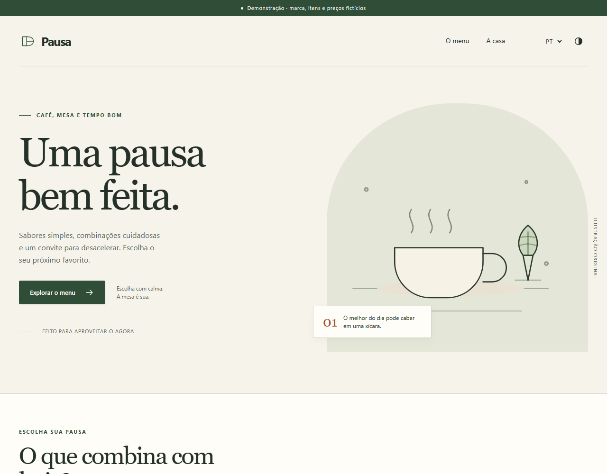
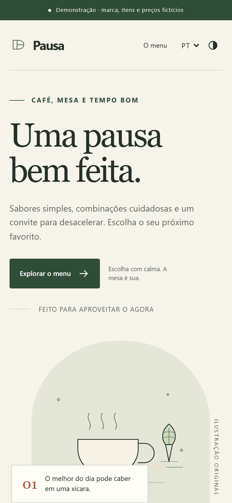

Pausa · Estudo de design
Um cardápio pensado para a mesa.
Pausa é uma cafeteria fictícia. O Menu Studio mostra como um cardápio pode reunir preços, ingredientes e horários em uma página que se adapta ao celular.
Layout editável no Figma
As capturas mostram um estudo alternativo da Pausa, com versões desktop e celular. O arquivo de design reúne componente de card, paleta e notas para a equipe que vai implementar.




A demonstração na web
Capturas da demonstração em HTML. A busca, as categorias e o seletor de idioma funcionam na página ao vivo.




O que vai para a implementação
- Identidade visual. Paleta clara e escura, tipografia editorial e ilustrações originais com referência de uso.
- Comportamento. Busca sem resultados, remoção de filtros, troca entre português e espanhol e contato de demonstração.
- Edição. Categorias, textos e preços ficam em um arquivo de configuração. O guia mostra o que revisar antes de publicar.